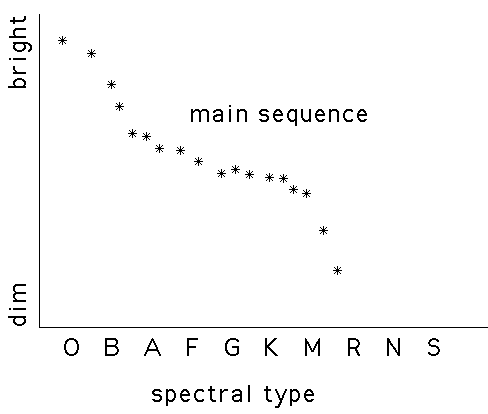

| If we knew how bright a star is, we could determine how far away it is. |
| The precise relation between distance, apparent brightness, and true brightness is an elaboration of a common-sense observation: given two lights of the same brightness, the one farther away will appear dimmer. |
| For the nearby stars, we have seen the distance was determined by parallax. |
| Knowing how bright the stars appear and how far away they are, we can determine the actual brightness of these nearest stars. |
| For these stars, Hertzsprung and Russell compared the actual brightness to the color (more precisely, the spectral type) of the stars. |
| Most stars fit into an approximately diagonal band called the main sequence. |
| The complete graph of spectral type vs actual brightness is called the HR Diagram. |
|  |
| With the HR Diagram, the color of a star can be used to determine its actual brightness. |
| Comparison with its apparent brightness allows the distance to be determined. |
| This works reasonably well to determine the distance to stars, but what about the distance to galaxies? |
| In other galaxies, most individual stars can't be resolved well enough to determine spectral type, so the HR disgram can't be used. |
Return to How far away are the galaxies?